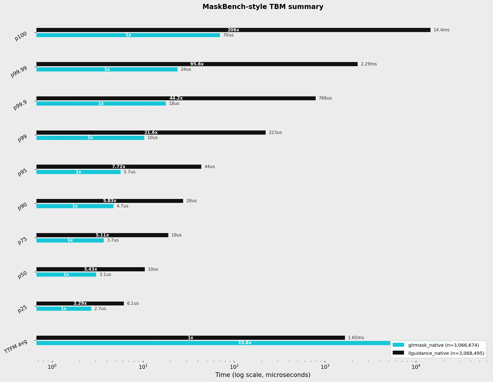
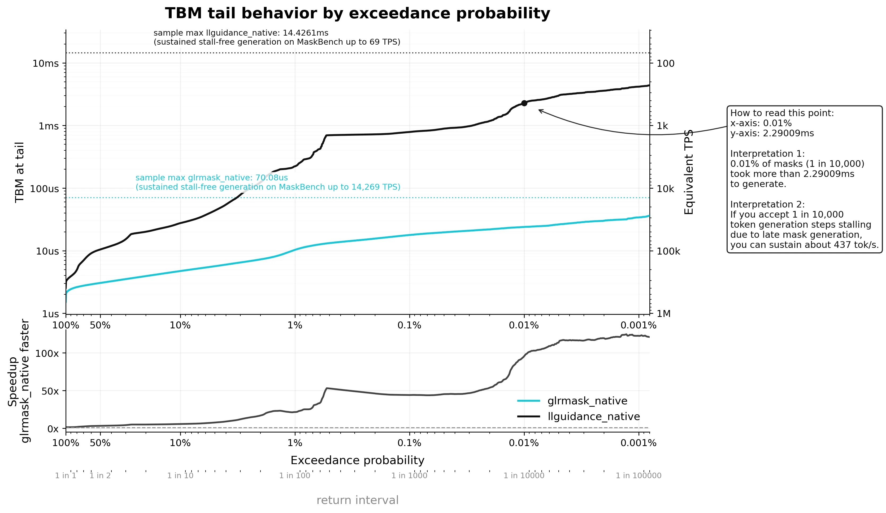

This version describes the weighted-automaton method and cites related work. Performance measurements refer to the August 2026 benchmark snapshot, not necessarily the latest development build.
0 A1
0 B1 Exact Grammar-Constrained
Decoding with
Boolean Array Weighted Automata
Isaac Breen
October 9, 2026
0 C1 Grammar-constrained decoding (GCD) forces LLM outputs to conform to a specified grammar. 0 C2 During sampling, GCD applies a mask to the model’s next-token distribution, ruling out tokens that would leave no grammar-valid continuation. 0 C3 For context-free grammars, token admissibility under this mask depends on the parser state. Existing CFG-capable systems commonly resolve this dependence by exploring parser behavior online during mask generation. 0 C4 For delimiter-rich JSON-schema workloads this online work is often small enough that optimized systems are already practical; it becomes a sharper issue for tail predictability and for grammars whose lexer/parser interactions are less JSON-like. This paper presents Merlon, a GCD system that compiles the parser-state-dependent part of token admissibility ahead of time. 0 C5 Given a grammar and a vocabulary, Merlon constructs a deterministic weighted automaton, the Parser DWA, whose input symbols are parser-stack symbols and whose weights are Boolean masks over lexer-state/token pairs. 0 C6 At runtime, mask generation feeds the parser stack directly into this automaton one symbol at a time, with each transition’s Boolean weight narrowing a running set of allowed tokens as it is taken. The traversal treats the parser stack as read-only. State-mutating parser actions are confined to commit, which advances the parser with the sampled token. 0 C7 On the 9,558-schema official JSONSchemaBench corpus, Merlon achieves 3.05 \(\mu \)s median, 10.3 \(\mu \)s p99, and 70.1 \(\mu \)s maximum Time Between Masks (mask plus commit), compared with 10.5 \(\mu \)s, 223 \(\mu \)s, and 14.4 ms for llguidance. The trade-off is cold construction: Merlon is best interpreted as a cached or precompiled hot-path representation, while llguidance remains the better choice for many first-use or single-use JSON schemas.
0 D1

1 A1 Large language models are now routinely asked to produce output that must satisfy hard structural constraints: JSON objects matching a schema, tool calls with typed arguments, SQL or configuration fragments, programming-language expressions, and domain-specific command languages. 1 A2 Grammar-constrained decoding (GCD) enforces such constraints during generation, guaranteeing that the output conforms to a target grammar. 1 A3 Rather than sampling from the model’s distribution directly, the decoder first masks out every next token that would lead to a grammatical dead end, then samples from what survives, so generation never enters a prefix from which no valid completion exists.
1 B1 For a target byte language \(L \subseteq \mathcal B^*\), a byte prefix \(u\), and a tokenizer vocabulary \(\mathcal V\), the mask contains exactly those tokens whose bytes leave at least one valid completion: \[ Mask_L(u)=\{v\in \mathcal V : \exists w\in \mathcal B^*.\; u\beta (v)w\in L\}, \] where \(\beta (v)\) is the byte string of token \(v\). 1 B2 At each step the decoder computes \(Mask_L(u)\), samples from the model distribution restricted to that set, and commits the chosen token.
1 C1 For regular constraints, this is simple. 1 C2 Before decoding, build a mask for each automaton state. 1 C3 Run each vocabulary token from that state; if the run avoids the dead state, include the token in that state’s mask. 1 C4 A vocabulary trie keeps this pass efficient by avoiding repeated work on shared prefixes. 1 C5 At runtime, the decoder just uses the mask for its current state.
1 D1 For context-free grammars, a lexer is not enough. 1 D2 It can recognize terminal structure, but it cannot represent the grammar or summarize parser context. 1 D3 A token may admit no completed terminal, one completed terminal, or several completed terminals from the current lexer state; any completed terminals must also be compatible with the current parser stack. 1 D4 Under lexical or grammatical ambiguity, the same token can induce many lexer paths, terminal sequences, and parser continuations.
1 E1 Existing CFG-capable decoders commonly answer this query by online search. 1 E2 During mask generation, they run candidate tokens through the lexer and test the parser actions or continuations those tokens may induce. 1 E3 This puts hypothetical parser execution in the token-generation loop. 1 E4 On delimiter-rich JSON workloads, optimized online systems can make this cost small enough for ordinary serving. 1 E5 On less regular grammars, and in the tail even on JSON-like workloads, the cost still depends on lexer ambiguity and parser ambiguity.
1 F1 This paper presents Merlon, a grammar-constrained decoding system that compiles the parser-dependent part of this search ahead of time. 1 F2 Given a grammar and tokenizer vocabulary, Merlon constructs a deterministic weighted automaton over LR stack symbols whose weights are token masks. 1 F3 At runtime, mask generation runs this automaton on the current parser stack, one symbol at a time. 1 F4 The returned mask is the intersection of the weights encountered along this run. 1 F5 Parser actions are not explored during this traversal. 1 F6 They are confined to commit, after a token has actually been sampled.
1 G1 The result is an exact CFG-constrained decoder with predictable per-token latency. 1 G2 It handles vocabulary tokens that cross grammar-terminal boundaries while preserving the standard mask/sample/commit interface. 1 G3 The parser still determines which tokens are admissible, but the parser-dependent search for hypothetical tokens is compiled ahead of time. 1 G4 This is most valuable when the grammar is reused, when worst-case mask latency matters, or when the grammar is not one of the delimiter-separated JSON schemas for which online systems are already highly optimized.
1 H1 This paper makes the following contributions:
2 A1 This section makes the mask semantics explicit. 2 A2 It defines the language-level mask, the runtime configuration set, and the Mask and Commit operations.
2 B1
2.1 A1 Let \(L\) be the language recognised by the grammar, and let \(\beta (v)\) be the byte string for token \(v\). 2.1 A2 After prefix \(u\), token \(v\) is valid exactly when \(u\beta (v)\) can still be completed to a string in \(L\): \begin {equation} \label {def:valid-token} \mathrm {Mask}_{L}(u) = \{\,v\in \mathcal V : \exists w,\;u\,\beta (v)\,w\in L\,\}. \end {equation} Everything that follows is an efficient, exact implementation of this one set.
2.1 B1
2.2 A1 The runtime never stores the consumed prefix \(u\); it stores a finite set of possible configurations instead. 2.2 A2 Let \(\mathcal T\) be the grammar terminals, \(Q_{\mathrm {lex}}\) the lexer states, \(Q_{\mathrm {LR}}\) the parser stack symbols, and \(\mathcal E\) the set of longest-match exclusion maps. 2.2 A3 A configuration set is a finite set of runtime configurations, \[ C\subseteq Q_{\mathrm {lex}}\times Q_{\mathrm {LR}}^*\times \mathcal E, \] where each configuration is a triple \((q,\sigma ,e)\):
2.2 B1
2.3 A1 Token validity over a configuration factors into a lexer side and a parser side. 2.3 A2 For a single configuration, token \(v\) is admissible exactly when both conditions hold:
2.3 B1 Equivalently, \begin {equation} \label {eq:mask-condition} \begin {aligned} \mathrm {Adm}(q,\sigma ,e;v) \quad \Longleftrightarrow \quad &\mathrm {ExclOK}(e,\beta (v))\\ &{}\land \exists r\in \mathrm {Lex}(q,\beta (v)): \mathrm {Parseable}(r,\sigma ). \end {aligned} \end {equation} The three relations here are defined and compiled in §5:
2.3 C1 For a configuration set \(C\) reached after consuming prefix \(u\), the runtime mask collects the tokens admitted by at least one configuration, \[ \mathrm {Mask}_{\mathrm {rt}}(C) = \{\,v\in \mathcal V : \exists (q,\sigma ,e)\in C,\; \mathrm {Adm}(q,\sigma ,e;v) \,\}, \] The rest of the paper maintains the invariant that this runtime mask agrees with the specification: \begin {equation} \label {eq:runtime-invariant} \mathrm {Mask}_{\mathrm {rt}}(C)=\mathrm {Mask}_{L}(u). \end {equation} §5 builds the automaton that makes \(\mathrm {Mask}_{\mathrm {rt}}\) a walk; §6 gives the walk and shows that Commit preserves (the runtime invariant) (§7).
2.3 D1
2.4 A1 With this invariant fixed, each decoding step has two operations.
2.4 B1
2.4 C1 The Parser DWA, its input labels (parser stack symbols), and its weights (masks over lexer-state/token pairs) are built once by the compiler of §5. 2.4 C2 In the evaluated implementation the stack symbols are LR parser states, but Mask only reads stack symbols and combines weights; it never replays parser transitions for candidate tokens.
2.4 D1 Example 2.1 (Running example). We thread one small grammar through the method. 2.4 D2 It accepts balanced brackets nested around a single x, so [x], [[x]], and [[[x]] are in the language: \[ \texttt {start ::= "[" inner "]"}, \qquad \texttt {inner ::= "x" | "[" inner "]"}. \] The terminals are \(\texttt {[}\), \(\texttt {]}\), and \(\texttt {x}\). 2.4 D3 The vocabulary contains the single-terminal tokens \(\texttt {[}\), \(\texttt {]}\), \(\texttt {x}\) and the two-terminal tokens \(\texttt {[[}\), \(\texttt {]]}\), \(\texttt {x]}\), \(\texttt {[x}\); the two-terminal tokens are what make within-token parser effects visible. 2.4 D4 The masks below are produced by the implementation:
2.4 E1
| after prefix | admissible tokens |
| \(\epsilon \) (start) | \(\texttt {[}\), \(\texttt {[[}\), \(\texttt {[x}\) |
| \(\texttt {[}\) | \(\texttt {[}\), \(\texttt {x}\), \(\texttt {[[}\), \(\texttt {x]}\), \(\texttt {[x}\) |
| \(\texttt {[[}\) | \(\texttt {[}\), \(\texttt {x}\), \(\texttt {[[}\), \(\texttt {x]}\), \(\texttt {[x}\) |
| \(\texttt {[x}\) | \(\texttt {]}\) |
2.4 F1 Every mask depends on the parser stack, not just the lexer: \(\texttt {]}\) is rejected at the start and after \(\texttt {[}\) (an inner is still required) but is the only admissible token after \(\texttt {[x}\), and \(\texttt {]]}\) is always rejected here because no prefix reaches bracket depth two with its inner already closed. §5 and §6 revisit this example to show how the compiled automaton produces these masks.
2.4 G1
3 A1 The lexer side records how token bytes scan into grammar-terminal sequences. 3 A2 It first fixes a deterministic lexer model, then defines execution on a byte fragment, then accounts for partial terminal matches and longest-match exclusions.
3 B1
3.1 A1 Let \(\mathcal B\) be the byte alphabet. 3.1 A2 We model the lexer as a total DFA \[ \mathcal A_{\mathrm {lex}} = (Q_{\mathrm {lex}},\mathcal B,\delta ,q_0,\bot ,A), \] where \(q_0\in Q_{\mathrm {lex}}\) is the initial state, \(\bot \in Q_{\mathrm {lex}}\) is the rejecting state, \(\delta :Q_{\mathrm {lex}}\times \mathcal B\to Q_{\mathrm {lex}}\) is total, \(\delta (\bot ,b)=\bot \), and \(A:Q_{\mathrm {lex}}\to 2^{\mathcal T}\) labels each lexer state with the terminals accepted there, with \(A(\bot )=\emptyset \). 3.1 A3 For a byte fragment \(b=b_1\cdots b_n\), the run from state \(q\) is \(q^{(0)}=q,\ q^{(i)}=\delta (q^{(i-1)},b_i)\), and we write \(\delta ^*(q,b)=q^{(n)}\).
3.1 B1 We adopt a clean-start convention for \(q_0\), under which no ordinary lexer transition enters \(q_0\): it is reached only by lexer initialization or by explicit reinitialization immediately after a terminal match. 3.1 B2 Thus \(q_0\) marks terminal boundaries. 3.1 B3 This convention can always be enforced by splitting the raw DFA start state.
3.1 C1
3.2 A1 The match operation records the terminals accepted by prefixes of this one run, together with the final lexer state. 3.2 A2 Define \[ \mathrm {Match}(q,b)=(\mu ,q^{(n)}), \qquad \mu (t) = \max \{\,i:1\le i\le n,\;t\in A(q^{(i)})\,\}, \] where \(\mu :\mathcal T\rightharpoonup \{1,\ldots ,n\}\) is partial, defined when the set is nonempty. 3.2 A3 Thus \(\mu (t)\) is the longest prefix of \(b\) that matches terminal \(t\) from state \(q\). 3.2 A4 If the run reaches \(\bot \), no later state accepts a terminal, since \(\bot \) is absorbing and \(A(\bot )=\emptyset \). 3.2 A5 The continuation relation is defined by reachability: \[ \mathrm {CanMatch}(q) = \{\,t\in \mathcal T: \exists b\in \mathcal B^*,\; t\in A(\delta ^*(q,b)) \,\}, \] the terminals that can be completed from lexer state \(q\), allowing the empty continuation.
3.2 B1 A byte fragment can contain several completed terminal boundaries, or end in the middle of a terminal match. 3.2 B2 We record both possibilities with a branching scan relation \(\mathrm {Scan}(q,b)\subseteq \mathcal T^*\times Q_{\mathrm {lex}}\). 3.2 B3 It is the least relation satisfying two clauses. 3.2 B4 First, if scanning all of \(b\) from \(q\) does not reject, the fragment may be left unemitted: \[ (\epsilon ,\delta ^*(q,b))\in \mathrm {Scan}(q,b) \qquad \text {if }\delta ^*(q,b)\ne \bot . \] Second, let \(\mathrm {Match}(q,b)=(\mu ,-)\). 3.2 B5 If \(t\in \operatorname {dom}(\mu )\), \(\mu (t)=i\), and \(b=cd\) with \(|c|=i\), then for every \((r,q')\in \mathrm {Scan}(q_0,d)\), \[ (tr,q')\in \mathrm {Scan}(q,b). \] This clause emits terminal \(t\), resets the lexer to \(q_0\), and continues scanning the remaining suffix. 3.2 B6 The recursion is finite because every emitted terminal consumes a nonempty prefix of \(b\).
3.2 C1
3.3 A1 \(\mathrm {Scan}(q,b)\) records outcomes, each a sequence \(r\) of terminals completed inside the fragment together with the lexer state \(q'\) left at the fragment boundary. 3.3 A2 Consider a single match \((r,q')\in \mathrm {Scan}(q,b)\). 3.3 A3 If scanning ends at \(q'=q_0\), the scanned terminal sequence \(r\) is already complete; if the parser accepts \(r\), the bytes \(b\) are valid next. 3.3 A4 If scanning ends in a non-boundary state \(q'\ne q_0\), it has stopped in the middle of a partial terminal match that straddles the fragment boundary. 3.3 A5 In this case it is not enough for the parser to accept \(r\): it must also accept \(rt\) for some \(t\in \mathrm {CanMatch}(q')\) that could complete the partial match. 3.3 A6 The completed lexer relation used in Equation (the mask condition) is therefore \[ \mathrm {Lex}(q,b) = \bigcup _{(r,q')\in \mathrm {Scan}(q,b)} \begin {cases} \{r\}, & q'=q_0,\\ \{rt:t\in \mathrm {CanMatch}(q')\}, & q'\ne q_0. \end {cases} \] Each \(r\in \mathrm {Lex}(q,b)\) is a complete terminal sequence that scanning \(b\) from \(q\) may yield, possibly including a terminal that completes a partial match when \(b\) ends mid-terminal, so it is ready for parser-stack checking.
3.3 B1 In Example 2.1 the terminals are single characters, so scanning is immediate: the token \(\texttt {[[}\) scans from \(q_0\) into the terminal sequence \(\texttt {[}\,\texttt {[}\), and \(\texttt {x]}\) into \(\texttt {x}\,\texttt {]}\). 3.3 B2 A two-terminal token thus presents two grammar terminals to the parser side inside one decoding step.
3.3 C1
3.4 A1 We adopt a longest-match convention for the lexer: a terminal is emitted only when the same match can no longer be extended. 3.4 A2 For example, an identifier-like match ab remains tentative while a longer match such as abc is still possible.
3.4 B1 Merlon handles tentative terminal boundaries by splitting the runtime configuration. 3.4 B2 At a tentative boundary where terminal \(t\) has matched but the same match can continue from lexer state \(q'\), the branch that emits \(t\) records \(t\in e(q')\). 3.4 B3 This declares the branch invalid if a later fragment scanned from \(q'\) encounters \(t\), which is exactly the case in which the earlier emission would violate longest-match lexing. 3.4 B4 For a candidate fragment \(b\), the longest-match exclusion check is \[ \mathrm {ExclOK}(e,b) \quad \Longleftrightarrow \quad \forall (q',X)\in e:\; \operatorname {dom}(\mu _{q',b})\cap X=\emptyset , \] where \(\mathrm {Match}(q',b)=(\mu _{q',b},-)\). 3.4 B5 A branch passes the check exactly when no excluded terminal is matched by the fragment from the lexer state at which the exclusion was recorded. 3.4 B6 How \(e\) is updated is described in §6.3.
4 A1 The parser side records, for each terminal, how consuming that terminal rewrites the parser stack. 4 A2 This section fixes the stack-effect interface, shows how the implementation derives effects from GLR tables, describes the corresponding real-time GPDA interface, and then composes and projects effects into the read-prefix languages used by Mask.
4 B1
4.1 A1 For each terminal \(t\), the parser side records the stack-prefix rewrites by which \(t\) can be consumed. 4.1 A2 These rewrites form a stack-effect language \(E_t\).
4.1 B1 Let \(\Gamma \) be the parser stack alphabet, write stacks top-first, and define \[ \Gamma ^\pm := \{\,p^-,p^+ : p\in \Gamma \,\}. \] A word \[ u^-v^+ \in E_t \] records a rewrite with read prefix \(u\) and replacement prefix \(v\). 4.1 B2 The read prefix is marked negatively, \[ u^- := p_1^-\cdots p_m^-, \] and the replacement prefix is marked positively, in push order, \[ v^+ := q_n^+\cdots q_1^+. \] The positive block is reversed because stacks are written top-first: lower symbols of \(v\) are pushed before its top symbols. 4.1 B3 Thus \(u^-v^+\) denotes \[ u\alpha \mapsto v\alpha \qquad (\alpha \in \Gamma ^*), \] where the top prefix \(u\) is replaced by \(v\) and the remaining stack is unchanged.
4.1 C1
4.2 A1 In the implementation, the source parser is GLR, with stack symbols \(Q_{\mathrm {LR}}\) given by an IELR(1) table. 4.2 A2 A shift on terminal \(t\) from state \(q\) to state \(q'\) contributes the signed word \[ q^- q^+ q'^+ \in E_t, \] which represents the stack rewrite \[ q\alpha \mapsto q' q\alpha . \] A reduction by \(A\to \beta \), with \(|\beta |=k\), does not itself consume \(t\); it is selected while \(t\) is the lookahead terminal. 4.2 A3 If the stack begins with \(k\) states above a predecessor state \(p\), the reduction pops those \(k\) states, exposes \(p\), follows the goto entry \(g=\mathrm {goto}(p,A)\), and pushes \(g\). 4.2 A4 Thus, when \(\sigma =q_k\cdots q_1p\alpha \), \[ q_k\cdots q_1p\alpha \mapsto gp\alpha . \] The predecessor \(p\) is read because it determines the goto state, but it is not removed from the final stack. 4.2 A5 For a terminal \(t\), \(E_t\) contains the signed words obtained by taking a finite sequence of reductions chosen with lookahead \(t\), followed by a shift on \(t\). 4.2 A6 It describes exactly which stack prefixes allow terminal \(t\) to be consumed, and what stack prefix replaces them afterward.
4.2 B1
4.3 A1 The GLR table is one source of terminal stack effects; an \(\epsilon \)-free generalized pushdown automaton gives the same information directly. 4.3 A2 Here \(\epsilon \)-free means that every transition consumes one grammar terminal. 4.3 A3 Let \[ M=(P,\mathcal T,\Gamma ,\Delta ,p_0,\gamma _0,F) \] be such a GPDA, with finite transition relation \[ \Delta \subseteq P\times \mathcal T\times \Gamma ^*\times P\times \Gamma ^* . \] A transition \((p,t,u,p',v)\in \Delta \) consumes terminal \(t\), changes control from \(p\) to \(p'\), and replaces stack prefix \(u\) by \(v\): \[ (p,u\alpha ) \mapsto (p',v\alpha ). \] Equivalently, we can fold the control state into the stack alphabet and view the transition as a one-terminal stack effect. 4.3 A4 We require each reachable instance of the transition to preserve completability: whenever \((p,u\alpha )\) is reachable, the target \((p',v\alpha )\) must be able to reach acceptance.
4.3 B1
4.4 A1 A stack-effect automaton for terminal \(t\) is a finite automaton over \(\Gamma ^\pm \) whose accepted language is \(E_t\). 4.4 A2 The compiler represents each stack-effect language by such an automaton.
4.4 B1
4.5 A1 The language \(E_t\) describes the effect of consuming a single terminal. 4.5 A2 To reason about a sequence of terminals, we compose their effects.
4.5 B1 Composition is concatenation followed by cancellation: \[ p^+p^-\to \epsilon , \qquad p^+q^-\to \bot \quad (p\ne q). \] A matching write-read pair cancels; a mismatch fails.
4.5 C1 For \[ x=u^-v^+, \qquad y=w^-z^+, \] write \(\preceq \) for prefix order. 4.5 C2 Composition compares the written prefix \(v\) with the read prefix \(w\): \[ x\odot y := \begin {cases} u^-a^+z^+ & v=wa,\\ u^-a^-z^+ & w=va,\\ \bot & v\not \preceq w \wedge w\not \preceq v. \end {cases} \] The residual \(a\) is positive when it was written by \(x\), and negative when it must be read from the original stack.
4.5 D1 For languages \(E,F\subseteq (\Gamma ^\pm )^*\), define their composition by collecting all successful word compositions: \[ E\odot F := \{\,x\odot y : x\in E,\ y\in F\,\}, \] where failed compositions are omitted.
4.5 E1 For a terminal sequence \(r=t_1\cdots t_k\), \[ E_r := E_{t_1}\odot \cdots \odot E_{t_k}. \] For the empty sequence, \[ E_\epsilon := \{\epsilon \}. \] Thus \(E_r\) is the language of net stack effects for consuming \(r\).
4.5 F1
4.6 A1 Only Commit needs to update the stack. Mask only needs to know whether a terminal sequence \(r\) can be parsed from the current stack. 4.6 A2 We therefore keep only the read prefix: \[ \widehat E_r := \{\,u\in \Gamma ^*: \exists v\in \Gamma ^*,\;u^-v^+\in E_r \,\}. \] Thus \(r\) is parseable from stack \(\sigma \) exactly when \(\sigma \) begins with some \(u\in \widehat E_r\): \[ \mathrm {Parseable}(r,\sigma ) \quad \Longleftrightarrow \quad \exists u\in \widehat E_r,\;\exists \alpha :\;\sigma =u\alpha . \] Since a token can induce several complete terminal sequences from the same lexer state, any parseable sequence suffices. 4.6 A3 Thus \[ \widehat E_{q,v} := \bigcup _{r\in \mathrm {Lex}(q,\beta (v))}\widehat E_r. \] This is the stack-prefix language that the Parser DWA must recognize for the pair \((q,v)\).
4.6 B1 The token \(\texttt {x]}\) in the running example (§2.1) shows why composition must happen before projection. 4.6 B2 It scans to the two-terminal sequence \(\texttt {x}\,\texttt {]}\), whose terminal effects contain internal cancellation that a mask query needs to ignore. 4.6 B3 Write \(b\) for the stack symbol witnessing the unmatched opening bracket already present when the token begins, \(p\) for the intermediate symbol obtained after parsing x as an inner, and \(c\) for the symbol left after the closing bracket has also been parsed. 4.6 B4 At this level of abstraction, the relevant terminal effects are \[ \begin {aligned} \texttt {x}:\quad & b^{-}b^{+}p^{+}\in E_{\texttt {x}},\\ \texttt {]}:\quad & p^{-}b^{-}c^{+}\in E_{\texttt {]}}. \end {aligned} \] The names \(b,p,c\) are illustrative stack-effect operands, not concrete table state numbers. 4.6 B5 Composing the two terminal effects concatenates their signed words and cancels each pushed symbol when the next effect reads it: \[ \underbrace {b^{-}b^{+}p^{+}}_{\texttt {x}}\; \underbrace {p^{-}b^{-}c^{+}}_{\texttt {]}} \;\xrightarrow {\;p^{+}p^{-}\to \epsilon \;}\; b^{-}b^{+}b^{-}c^{+} \;\xrightarrow {\;b^{+}b^{-}\to \epsilon \;}\; b^{-}c^{+}. \] Thus \(b^-c^+\in E_{\texttt {x]} }\), and \(\widehat E_{\texttt {x]}}=\{\,b\,\}\), closed under stack suffixes. 4.6 B6 The mask query does not need to remember the intermediate \(p\), nor the copy of \(b\) that x read and restored. 4.6 B7 It only needs to test that \(b\) was already present. 4.6 B8 This is why the running example admits \(\texttt {x]}\) after prefix \(\texttt {[}\): the token performs an internal parse-and-close sequence, but the surviving stack read is just the pre-existing open bracket.
5 A1 §2 expressed admissibility using three ingredients: lexer scans, parser stack effects, and longest-match exclusions. 5 A2 The first two are compiled into the Parser DWA queried at runtime. 5 A3 The longest-match exclusion ingredient remains a runtime filter, handled by the lexer-match table in §6.2.2.
5 B1
5.1 A1 A weight is a Boolean mask \[ W\in K:=\mathbb B^{Q_{\mathrm {lex}}\times \mathcal V}. \] Its coordinates are indexed by a lexer state \(q\) and a vocabulary token \(v\): \[ W_{qv}\in \mathbb B, \qquad q\in Q_{\mathrm {lex}},\; v\in \mathcal V. \] The weight space \(K\) is an idempotent semiring: \(\oplus \) is mask union and \(\otimes \) is mask intersection. 5.1 A2 The operations are pointwise: \[ (W\oplus W')_{qv}=W_{qv}\lor W'_{qv}, \qquad (W\otimes W')_{qv}=W_{qv}\land W'_{qv}. \] The zero element is the all-false mask, and the unit is the all-true mask.
5.1 B1
5.2 A1 Weighted automata multiply weights along a run. 5.2 A2 For the deterministic automata used here, the run is described by a partial transition function. 5.2 A3 Each transition on that path contributes a weight, and the final state contributes one more weight.
5.2 B1 Formally, a DWA over alphabet \(\Sigma \) is a tuple \[ \mathcal A=(S,s_0,\tau ,\varphi ), \] where \(S\) is a finite state set, \(s_0\in S\) is the start state, \(\tau :S\times \Sigma \rightharpoonup S\times K\) is the partial weighted transition function, and \(\varphi :S\to K\) assigns final weights. 5.2 B2 For a word \(w=a_1\cdots a_m\), write \[ s_0 \xrightarrow {a_1/W_1} s_1 \xrightarrow {a_2/W_2}\cdots \xrightarrow {a_m/W_m} s_m \] when \(\tau (s_{j-1},a_j)=(s_j,W_j)\). 5.2 B3 Evaluation produces a weight \(\llbracket \mathcal A\rrbracket :\Sigma ^*\to K\), \[ \big [\!\big [\mathcal A\big ]\!\big ](w) = W_1\otimes \cdots \otimes W_m\otimes \varphi (s_m). \] If the path is undefined the value is \(0\); for \(w=\epsilon \) the empty product is the unit, so \(\llbracket \mathcal A\rrbracket (\epsilon )=\varphi (s_0)\). 5.2 B4 Since weights are masks over lexer-state/token pairs, a pair appears in \(\llbracket \mathcal A\rrbracket (w)\) exactly when it appears in every transition weight along the path and in the final weight.
5.2 C1
5.3 A1 The parser construction reasons about terminal sequences, but the model proposes vocabulary tokens. 5.3 A2 The Terminal DWA is the compressed weighted representation of this translation. 5.3 A3 Recall that, for lexer state \(q\) and token \(v\), \[ \mathrm {Lex}(q,\beta (v))\subseteq \mathcal T^* \] is the set of complete terminal sequences obtained by scanning \(\beta (v)\) from \(q\). 5.3 A4 The automaton is defined by \[ \big [\!\big [\mathcal T_{\mathrm {DWA}}\big ]\!\big ](r)_{qv}=1 \quad \Longleftrightarrow \quad r\in \mathrm {Lex}(q,\beta (v)). \] Thus, given a terminal sequence \(r\), the Terminal DWA returns the mask of lexer-state/token pairs that can realize \(r\) exactly. 5.3 A5 It is compressed because the indexed family \(\{\mathrm {Lex}(q,\beta (v))\}_{q,v}\) is represented by one weighted automaton.
5.3 B1
5.4 A1 The Parser DWA is the runtime automaton walked over parser-stack prefixes. 5.4 A2 Its contract is \[ \big [\!\big [\mathcal P_{\mathrm {DWA}}\big ]\!\big ](\rho )_{qv}=1 \quad \Longleftrightarrow \quad \rho \in \widehat E_{q,v}. \] Recall from §4.6 that the token-specific read-prefix language is \[ \widehat E_{q,v} := \bigcup _{r\in \mathrm {Lex}(q,\beta (v))} \widehat E_r . \] Equivalently, \[ \begin {aligned} \rho \in \widehat E_{q,v} &\quad \Longleftrightarrow \quad \exists r: r\in \mathrm {Lex}(q,\beta (v)) \;\land \; \rho \in \widehat E_r \\ &\quad \Longleftrightarrow \quad \exists r: \big [\!\big [\mathcal T_{\mathrm {DWA}}\big ]\!\big ](r)_{qv}=1 \;\land \; \rho \in \widehat E_r . \end {aligned} \]
5.4 B1 The construction realizes this equivalence by substituting parser-side automata into Terminal-DWA paths. 5.4 B2 For each terminal \(t\), let \(\mathcal A_t\) be the stack-effect automaton for \(E_t\). 5.4 B3 It accepts signed words \(u^-v^+\), one for each stack rewrite represented in \(E_t\). 5.4 B4 Substituting the family \(\{\mathcal A_t\}_{t\in \mathcal T}\) into \(\mathcal T_{\mathrm {DWA}}\) gives a weighted automaton over signed stack symbols. 5.4 B5 Each Terminal-DWA transition \(x\xrightarrow {t/W}y\) is replaced by a fresh copy of \(\mathcal A_t\): the copy’s start and accepting states are identified with \(x\) and \(y\), and every copied transition carries weight \(W\). 5.4 B6 A path through the substituted automaton chooses a Terminal-DWA terminal sequence \(r=t_1\cdots t_k\), one accepting path in each \(\mathcal A_{t_i}\), and carries the product of the Terminal-DWA weights on the original terminal path.
5.4 C1 For example, suppose a Terminal-DWA path contains \[ x_0 \xrightarrow {t_1/W_1} x_1 \xrightarrow {t_2/W_2} x_2 . \] Let \(\mathcal A_{t_1}\) and \(\mathcal A_{t_2}\) be the stack-effect automata substituted for \(t_1\) and \(t_2\). 5.4 C2 Suppose \(\mathcal A_{t_1}\) has an accepting path \[ s_{1,0} \xrightarrow {p^-} s_{1,1} \xrightarrow {q^+} s_{1,2}, \] and \(\mathcal A_{t_2}\) has an accepting path \[ s_{2,0} \xrightarrow {q^-} s_{2,1} \xrightarrow {r^+} s_{2,2}. \] Substitution identifies the start and accepting states of each copied automaton with the endpoints of the Terminal-DWA edge it replaces: \(s_{1,0}\) with \(x_0\), \(s_{1,2}\) with \(x_1\), \(s_{2,0}\) with \(x_1\), and \(s_{2,2}\) with \(x_2\). 5.4 C3 It also gives each copied edge the weight of the Terminal-DWA edge being replaced. 5.4 C4 Thus these accepting paths produce \[ x_0 \xrightarrow {p^-/W_1} s_{1,1} \xrightarrow {q^+/W_1} x_1 \xrightarrow {q^-/W_2} s_{2,1} \xrightarrow {r^+/W_2} x_2 . \] This path reads the signed word \[ p^-q^+q^-r^+ . \] The adjacent \(q^+q^-\) pair is internal to the terminal sequence: \(q\) is pushed by the first terminal effect and immediately read by the second. 5.4 C5 Cancellation removes this pair: \[ q^+q^-\to \epsilon . \] Thus the whole signed word reduces to \[ p^-q^+q^-r^+ \;\longrightarrow \; p^-r^+ . \] At the automaton level, the two cancelled edges are replaced by an \(\epsilon \)-edge whose weight is the product of their weights: \[ x_0 \xrightarrow {p^-/W_1} s_{1,1} \xrightarrow {\epsilon /(W_1\otimes W_2)} s_{2,1} \xrightarrow {r^+/W_2} x_2 . \] Since \(\otimes \) is mask intersection, this \(\epsilon \)-edge records exactly the lexer-state/token pairs that survive both sides of the cancelled stack action.
5.4 D1 A mismatch is handled by the same local check, but discards the path. 5.4 D2 In the mirrored case, keep the first stack-effect path the same, \[ s_{1,0} \xrightarrow {p^-} s_{1,1} \xrightarrow {q^+} s_{1,2}, \] but suppose the second automaton instead reads a different symbol \(h\ne q\): \[ s_{2,0} \xrightarrow {h^-} s_{2,1} \xrightarrow {r^+} s_{2,2}. \] Substitution then produces \[ x_0 \xrightarrow {p^-/W_1} s_{1,1} \xrightarrow {q^+/W_1} x_1 \xrightarrow {h^-/W_2} s_{2,1} \xrightarrow {r^+/W_2} x_2 , \] which reads \[ p^-q^+h^-r^+ . \] Now the boundary pair is \(q^+h^-\). 5.4 D3 Since the pushed symbol and the read symbol differ, cancellation fails: \[ q^+h^-\to \bot \qquad (h\ne q), \] so the whole substituted path is discarded.
5.4 E1 After all cancellations, every surviving path has normal form \[ u^-v^+. \] The read prefix \(u\) is the part of the parser stack that had to be present before \(r\) began; the write prefix \(v\) is the stack prefix left afterward. Mask only checks admissibility, so the construction projects each surviving path to its read side \(u\), preserving the accumulated weight. 5.4 E2 Thus the substituted paths for \(r\), after cancellation and projection, accept exactly the read-prefix language \(\widehat E_r\).
5.4 F1 If several substituted paths project to the same read-prefix path, their weights are unioned with \(\oplus \). 5.4 F2 The result is a weighted automaton over parser-stack symbols whose paths read prefixes \(\rho \), and whose weights record the \((q,v)\) pairs for which some induced terminal sequence can be parsed from \(\rho \). 5.4 F3 The Parser DWA is the deterministic runtime form of this weighted automaton; the boundedness assumptions that make it finite are stated in §8.
5.4 G1 For any lexer-state/token pair \((q,v)\), the read-prefix automaton for \(\widehat E_{q,v}\) can be recovered from the Parser DWA by retaining exactly the transitions whose weights contain \((q,v)\), and accepting exactly the states whose final weights contain \((q,v)\). 5.4 G2 Thus a single Parser DWA stores the whole family of read-prefix automata: common states and transitions are represented once, while weights record which lexer-state/token pairs use each piece.
6 A1 The Parser DWA, the lexer-match table, and the stack-effect automata are all compiled once per grammar and vocabulary. 6 A2 The runtime stores compact parser configurations, answers Mask by walking graph-structured stacks through the Parser DWA, and advances state with Commit.
6 B1
6.1 A1 After each generated prefix, the runtime stores the configuration set \(C\) of §2.2 in a compact form: graph-structured parser stacks grouped by lexer state, with longest-match exclusions attached to stack branches. 6.1 A2 Formally it is a finite map \[ S:Q_{\mathrm {lex}}\rightharpoonup \mathrm {GSS}(Q_{\mathrm {LR}},\mathcal E), \] from lexer states to graph-structured parser stacks. 6.1 A3 Each branch of a graph-structured stack represents one parser stack and carries the longest-match exclusion map \(e\in \mathcal E\) for that branch. 6.1 A4 Enumerating all branches of all stacks in \(S\), together with the lexer-state key of each map entry, gives back the configuration set \[ C\subseteq Q_{\mathrm {lex}}\times Q_{\mathrm {LR}}^*\times \mathcal E \] of §2.2. 6.1 A5 Thus \(S\) compactly represents \(C\). 6.1 A6 The graph structure shares common stack suffixes, but this sharing is purely representational: a mask query has the same semantics as checking each represented configuration separately.
6.1 B1
6.2 A1 A mask query computes \(\mathrm {Mask}_{\mathrm {rt}}(C)\) from the compact runtime state \(S\). 6.2 A2 For a single represented configuration \((q,\sigma ,e)\), Equation (the mask condition) says that token \(v\) is admissible when it passes the longest-match exclusion check and some terminal sequence induced by \(\beta (v)\) is parseable from \(\sigma \). 6.2 A3 By the definition of \(\widehat E_{q,v}\), the parser-side condition is equivalently \[ \exists \rho ,\alpha :\; \sigma =\rho \alpha \;\land \; \rho \in \widehat E_{q,v}, \] and the Parser DWA is the compiled form of this prefix test: \(\llbracket \mathcal P_{\mathrm {DWA}}\rrbracket (\rho )_{qv}=1 \Leftrightarrow \rho \in \widehat E_{q,v}\). 6.2 A4 The mask query uses this equivalence by walking the represented stack prefixes through the Parser DWA.
6.2 B1
6.2.1 A1 The runtime then walks the active graph-structured stacks through the Parser DWA. 6.2.1 A2 Suppose a work item has reached Parser-DWA state \(x\) with accumulator \(A\). 6.2.1 A3 The stack prefix read so far contributes \(A\otimes \varphi (x)\) to the output mask. 6.2.1 A4 If the next stack symbol is \(p\) and \(\tau (x,p)=(y,W)\), then the successor work item has state \(y\) and accumulator \(A\otimes W\). 6.2.1 A5 Undefined transitions and empty accumulators are discarded. 6.2.1 A6 The query unions all contributions over all prefixes of all represented stacks and all active lexer-state entries. 6.2.1 A7 The resulting \(Q_{\mathrm {lex}}\times \mathcal V\) mask is projected to a vocabulary mask by keeping token \(v\) whenever \(v\) appears in any lexer-state row.
6.2.1 B1 The graph-structured stack implements this prefix walk without enumerating every stack. 6.2.1 B2 When several paths reach the same GSS node and Parser-DWA state, their accumulators are unioned with \(\oplus \) before the shared suffix is explored. 6.2.1 B3 This preserves the semantics above: the remaining computation depends only on the GSS node, the Parser-DWA state, and the accumulated surviving token pairs.
6.2.1 C1 Each branch contributes only its own \(q\)-row; carrying the full \(Q_{\mathrm {lex}}\times \mathcal V\) domain lets a single Parser DWA serve all lexer states at once, and the final projection unions the surviving rows.
6.2.1 D1 Collecting these terms gives the per-query cost model. 6.2.1 D2 A mask query is one Parser-DWA walk over the active stack prefixes, and its work is bounded by the number of distinct GSS-node/Parser-DWA-state pairs the walk visits times the bounded per-terminal read depth, plus the weight operations performed along the way. 6.2.1 D3 GSS sharing unions paths that agree on a node/state pair, so each pair is explored once, and the weight operations are costed by the range count of the masks combined rather than by the vocabulary size \(|\mathcal V|\) (§9). 6.2.1 D4 The query never performs a dense per-token scan over \(\mathcal V\): its cost tracks the local stack geometry and the structure of the surviving masks, not the size of the vocabulary.
6.2.1 E1 In Example 2.1, after committing \(\texttt {[}\) the runtime holds a short stack prefix at lexer state \(q_0\). 6.2.1 E2 Walking that prefix through the Parser DWA accumulates the row that admits exactly \(\{\texttt {[},\texttt {x},\texttt {[[}, \texttt {x]},\texttt {[x}\}\), the second line of the table in Example 2.1, while \(\texttt {]}\) and \(\texttt {]]}\) receive empty weights along the walk and are dropped.
6.2.1 F1
6.2.2 A1 First account for longest-match exclusions. 6.2.2 A2 The runtime uses the precomputed lexer-match table \[ M(q,t) = \{\,v\in \mathcal V: t\in \operatorname {dom}(\mu _{q,\beta (v)})\,\}, \qquad \mathrm {Match}(q,\beta (v))=(\mu _{q,\beta (v)},-). \] Thus \(M(q,t)\) contains exactly the vocabulary tokens whose strings match terminal \(t\) when scanned from lexer state \(q\). 6.2.2 A3 For a branch with longest-match exclusion map \(e\), define \[ X(e) = \mathcal V \setminus \bigcup _{q'\in \operatorname {dom}(e)}\;\bigcup _{t\in e(q')} M(q',t). \] A token lies in \(X(e)\) exactly when it passes the longest-match exclusion check for that branch. 6.2.2 A4 For a branch under lexer state \(q\), the initial accumulator is the mask \(A\in K\) whose \(q\)-row is \(X(e)\) and whose other rows are empty.
6.2.2 B1 The same branch-local filter is applied before the Parser-DWA contribution is projected to vocabulary tokens. 6.2.2 B2 Exclusion filtering is therefore a mask-side operation: it removes tokens whose bytes would prove that an earlier tentative terminal was emitted too early under longest-match lexing.
6.2.2 C1
6.3 A1 Commit updates \(S\) after a byte fragment \(b\) has been accepted. 6.3 A2 If \(S\) represents the configurations reachable after prefix \(u\), then after committing \(b\) the new state should represent the configurations reachable after prefix \(ub\). 6.3 A3 During ordinary decoding \(b=\beta (v)\) for the sampled token \(v\); during prefill the same operation is applied to prompt bytes or partial-completion bytes.
6.3 B1 Commit starts from each active lexer-state entry in \(S\). 6.3 B2 For each represented branch, it scans \(b\) from that lexer state. 6.3 B3 Scanner branches that enter the rejecting state are discarded. 6.3 B4 Successful scanner branches may emit zero or more completed terminals and may end either at the boundary state \(q_0\) or in a non-boundary lexer state.
6.3 C1 Longest-match exclusions are checked during this scan. 6.3 C2 If the branch carries \(t\in e(q')\), and scanning the fragment from lexer state \(q'\) matches terminal \(t\), then that branch is discarded. 6.3 C3 Otherwise the longest-match exclusion map is carried forward along the scanner branch, with entries updated to refer to the lexer state reached after the scanned fragment.
6.3 D1 Commit then processes the completed terminal matches encountered while scanning \(b\). 6.3 D2 For each emitted terminal \(t\), it advances the corresponding graph-structured stacks according to the stack-effect relation \(E_t\). 6.3 D3 Each applicable rewrite \(u\xrightarrow {t}v\) replaces stack prefix \(u\) by stack prefix \(v\), preserving the remaining stack suffix. 6.3 D4 If no rewrite applies, that branch is discarded; if several apply, the graph-structured stack represents the resulting branches and shares their common suffixes.
6.3 E1 If scanning ends at \(q_0\), the emitted terminal sequence is complete, so the resulting stacks are stored under lexer state \(q_0\). 6.3 E2 If scanning ends in a non-boundary state \(q'\ne q_0\), the fragment has ended in the middle of a possible terminal. 6.3 E3 The branch is retained only if some terminal in \(\mathrm {CanMatch}(q')\) can still be parsed from the current stacks. 6.3 E4 This is the commit-time version of the completion check used in \(\mathrm {Lex}(q,b)\): partial lexer matches are kept only when they can still lead to a valid parser continuation. 6.3 E5 Finally, if a branch emits terminal \(t\) while the same match can still continue to a lexer state \(q'\), the emitted branch records the longest-match exclusion \(t\in e(q')\); if a later fragment scanned from \(q'\) encounters \(t\), that branch is discarded, which enforces longest-match lexing.
7 A1 This section collects the proof obligations behind exact masking. 7 A2 The statement is intentionally modular: lexer execution, parser stack effects, read projection, Parser-DWA evaluation, mask aggregation, and commit preservation each correspond to one construction used earlier.
7 B1
7.1 A1 Theorem 7.1 (Exact runtime masks). Let a grammar and vocabulary satisfy the finiteness conditions of §8. 7.1 A2 If the runtime state represents exactly the viable configurations after consumed byte prefix \(u\), then Mask returns \(\mathrm {Mask}_{L}(u)\). 7.1 A3 After Commit of any accepted byte fragment \(b\), the updated state represents exactly the viable configurations after \(ub\).
7.1 B1
7.1 C1 The proof is by composition of the lemmas below. 7.1 C2 The mask half reduces token validity to lexer outcomes and read-projected stack prefixes; the commit half is an induction over accepted fragments.
7.1 D1
7.2 A1 Lemma 7.2 (Lexer correspondence). For any lexer state \(q\) and byte fragment \(b\), the relation \(\mathrm {Scan}(q,b)\) enumerates exactly the terminal sequences emitted inside \(b\) together with the lexer state left at the fragment boundary. 7.2 A2 The completed relation \(\mathrm {Lex}(q,b)\) is exactly the set of complete terminal sequences that may be relevant to parser checking after accounting for partial matches.
7.2 B1
7.2 C1 This follows directly from the two clauses defining \(\mathrm {Scan}\): leaving a non-rejecting suffix unemitted, or emitting a nonempty accepted terminal prefix and restarting at the boundary state. 7.2 C2 The partial-match clause adds precisely the terminals in \(\mathrm {CanMatch}\) when the fragment ends away from a terminal boundary.
7.2 D1
7.3 A1 Lemma 7.3 (Stack-effect correspondence). For each terminal \(t\), the language \(E_t\) contains exactly the signed words \(u^-v^+\) representing stack-prefix rewrites reachable by the source parser while consuming \(t\). 7.3 A2 For a terminal sequence \(r\), the composed language \(E_r\) contains exactly the signed words representing rewrites reachable by consuming \(r\).
7.3 B1
7.3 C1 For GLR tables, each element of \(E_t\) is a finite reduction run selected under lookahead \(t\), followed by a shift of \(t\), encoded as a signed word. 7.3 C2 For an \(\epsilon \)-free GPDA, \(E_t\) is induced directly by the terminal-labelled transition relation. 7.3 C3 Composition with cancellation preserves precisely those adjacent effects whose pushed and read symbols agree.
7.3 D1
7.4 A1 Lemma 7.4 (Read projection). For any terminal sequence \(r\) and parser stack \(\sigma \), \(\mathrm {Parseable}(r,\sigma )\) holds if and only if \(\sigma \) has a prefix in \(\widehat E_r\).
7.4 B1
7.4 C1 By definition, \(\widehat E_r\) forgets only the replacement prefix \(v\) in a signed effect \(u^-v^+\in E_r\); it retains exactly the prefix \(u\) that must already be present on the stack before \(r\) can be consumed.
7.4 D1
7.5 A1 Lemma 7.5 (Parser-DWA contract). For every stack prefix \(\rho \), lexer state \(q\), and token \(v\), \[ \big [\!\big [\mathcal P_{\mathrm {DWA}}\big ]\!\big ](\rho )_{qv}=1 \quad \Longleftrightarrow \quad \rho \in \widehat E_{q,v}. \]
7.5 B1
7.5 C1 The Terminal DWA supplies exactly the terminal sequences that token \(v\) can produce from lexer state \(q\), together with the Boolean weights identifying those \((q,v)\) pairs. 7.5 C2 Substitution inserts the one-terminal stack-effect automata along these terminal paths. 7.5 C3 Cancellation preserves exactly the successful composed stack effects, discarding paths with mismatched push/read pairs, and projection keeps exactly their read prefixes. 7.5 C4 Determinization preserves the resulting weighted language, while \(\oplus \) unions alternative terminal sequences and alternative stack-effect paths. 7.5 C5 Hence the \((q,v)\) coordinate accepts precisely \(\widehat E_{q,v}\).
7.5 D1
7.6 A1 Lemma 7.6 (Mask computation). For any represented configuration set \(C\), the runtime walk of §6.2 computes \(\mathrm {Mask}_{\mathrm {rt}}(C)\).
7.6 B1
7.6 C1 For a single branch, the initial accumulator applies longest-match exclusions; then the Parser-DWA walk contributes exactly the tokens whose required read prefix matches some prefix of the represented stack. 7.6 C2 Unioning over GSS branches and lexer-state rows is exactly the existential quantification in \(\mathrm {Mask}_{\mathrm {rt}}\).
7.6 D1
7.7 A1 Proposition 7.7 (Runtime invariant). Let \(S\) represent the configuration set \(C\) reachable after prefix \(u\). 7.7 A2 Then the mask query of §6.2 computes \(\mathrm {Mask}_{\mathrm {rt}}(C)\), and after Commit of a fragment \(b\), the updated state represents the configuration set reachable after \(ub\). 7.7 A3 Consequently \(\mathrm {Mask}_{\mathrm {rt}}(C)=\mathrm {Mask}_L(u)\) holds at every decoding step.
7.7 B1
7.7 C1 The base case is the initial lexer state and parser start stack. 7.7 C2 For the inductive step, Commit mirrors lexer execution, terminal stack-effect rewrites, partial-match retention, and longest-match exclusion updates. 7.7 C3 Thus it drops no viable configuration and adds no unreachable one. 7.7 C4 Combined with the mask lemma, the invariant proves Theorem 7.1.
8 A1 The construction is exact for the parser interface it compiles, but it is not an unbounded parser packaged as a finite automaton. 8 A2 This section states the finitary assumptions and the scope boundaries they imply.
8 B1
8.1 A1 Lemma 8.1 (Finiteness). Suppose the grammar is normalized to remove right recursion and hidden left recursion (§8.2), and suppose the vocabulary is fixed. 8.1 A2 Then the token-level read-prefix languages \(\widehat E_{q,v}\) have bounded depth, and the Parser DWA has bounded stack-read depth.
8.1 B1
8.1 C1 The load-bearing assumption is not that the whole parser is finite-state. 8.1 C2 It is that consuming one terminal has a finite, bounded stack effect. 8.1 C3 In the evaluated GLR implementation, grammar normalization gives this property. 8.1 C4 A GPDA source may also provide it directly through its finite terminal-consuming transitions.
8.1 D1
8.2 A1 The compiler applies several normalization passes before stack-effect automata are built. 8.2 A2 The key step is to remove right recursion and hidden left recursion. 8.2 A3 For a GLR parser of a CFG without right and hidden left recursion, Aycock et al. 8.2 A4 [1] show that the number of consecutive reductions between the shifts of two adjacent symbols is bounded by a grammar constant. 8.2 A5 This bounds the reduction runs that contribute to a one-terminal stack effect.
8.2 B1 Other normalization passes serve more local engineering purposes. 8.2 B2 Nullable nonterminals are eliminated to avoid zero-length reductions, and long productions are split so that reductions pop through several shallower advance steps rather than one deep pop concentrated into a single step.
8.2 C1
8.3 A1 The boundedness argument has three parts.
8.3 B1 First, each one-terminal stack effect has bounded read and write prefixes. 8.3 B2 In the GLR construction, an element of \(E_t\) is a bounded reduction run chosen with lookahead \(t\), followed by one shift of \(t\). 8.3 B3 Hence every signed word \(u^-v^+\in E_t\) has bounded read and write length. 8.3 B4 In a finite \(\epsilon \)-free GPDA source, the same property follows from the finite transition relation: each transition consumes one terminal and rewrites finite stack strings.
8.3 C1 Second, token scans are finite. \(\mathrm {Lex}(q,\beta (v))\) is computed by running the lexer DFA over the fixed byte string \(\beta (v)\), so each token induces finitely many complete terminal sequences, each of bounded length.
8.3 D1 Third, composition and cancellation do not introduce unbounded reads. 8.3 D2 Composing the bounded terminal effects along a token-induced terminal sequence concatenates their signed words and applies only the reductions \(p^{+}p^{-}\to \epsilon \) and \(p^{+}q^{-}\to \bot \); neither rule lengthens a word. 8.3 D3 The read prefix of a composite effect is therefore bounded by the number of terminals in the token sequence times the one-terminal read bound. 8.3 D4 The read projection \(\widehat E_r\) keeps only those bounded prefixes. 8.3 D5 Thus every \(\widehat E_{q,v}\) has bounded depth, and the Parser DWA reads only a bounded stack prefix at runtime.
8.3 E1
8.4 A1 If a source parser contains \(\epsilon \)-moves, those moves must be summarized before this interface applies. 8.4 A2 The compiler consumes one-terminal stack effects, so stack changes that occur without consuming a terminal must be folded into the surrounding terminal-consuming effects. 8.4 A3 The summarized effects must again have a finite, bounded representation.
8.4 B1
8.5 A1 The compiled objects depend on the vocabulary. 8.5 A2 The Terminal DWA is indexed by token byte strings \(\beta (v)\), and Parser-DWA weights are Boolean masks over \(Q_{\mathrm {lex}}\times \mathcal V\). 8.5 A3 Changing the tokenizer or vocabulary therefore changes the scan relation and the Parser-DWA weights. 8.5 A4 In serving deployments this is normally amortized over a fixed model and tokenizer; per-request tokenizer changes require recompilation.
8.5 B1
8.6 A1 The construction assumes an incremental parser whose configurations represent prefixes that can still be extended to complete strings. 8.6 A2 A bare PDA or prefix-rewriting transition system may recognize the same complete language while exposing nonviable intermediate configurations; such configurations should be trimmed before effects are used. 8.6 A3 Parsers with unbounded terminal effects, unsummarized \(\epsilon \)-moves, dynamically changing vocabularies, or context-sensitive side conditions such as type checking and uniqueness are outside the exact finite construction described here.
9 A1 This section records implementation choices that make the construction practical without changing its mask semantics.
9 B1
9.1 A1 The second prerequisite is the parse-table construction. 9.1 A2 The evaluated implementation uses GLR parsing over IELR(1) tables rather than LALR(1) tables, which keeps the language-recognition power of canonical LR while retaining much of the state merging that makes LALR compact [4]. 9.1 A3 The payoff is in the straddling-terminal check of Commit: a candidate completion \(t\in \mathrm {CanMatch}(q')\) can be tested by inspecting the parse-table cell for the current top LR state and lookahead \(t\). 9.1 A4 A shift is sufficient, and a reduce action is sufficient as well: with LR(1)-precise reduce lookaheads, a reduction listed under \(t\) is on a viable path for that same lookahead and will expose another justified action, eventually reaching a shift of \(t\). 9.1 A5 With LALR-style lookahead merging, the same table-cell test could admit a spurious reduce action; ruling that out would require an exploratory execution of parser actions.
9.1 B1
9.2 A1 The compiler builds stack-effect automata from terminal-labelled GLR action runs. 9.2 A2 Each accepting path records a read prefix and the corresponding rewrite template used by Commit. 9.2 A3 During construction, signed-word cancellation is applied eagerly so that pushed-and-read internal symbols do not survive into the read projection.
9.2 B1
9.3 A1 The lexer DFA is compiled into tables for byte transitions, accepted terminals, \(\mathrm {CanMatch}\), and the vocabulary-indexed match table \(M(q,t)\) of §6.2.2. 9.3 A2 These tables let Mask apply longest-match exclusions without rescanning the whole vocabulary.
9.3 B1
9.4 A1 Substitution groups Terminal-DWA edges by common target before inserting stack-effect recognizers, sharing subgraphs before cancellation and shrinking the NWA that must be determinized. 9.4 A2 The final Parser DWA is stored as a transition table plus final weights; each state represents a set of read-side obligations and the surviving \(q,v\) weights at that point.
9.4 B1
9.5 A1 The compiler never materializes weights as dense \(|Q_{\mathrm {lex}}|\times |\mathcal V|\) Boolean arrays. 9.5 A2 Each weight is stored as a range-set-blaze range map from lexer-state ranges to interned token range sets. 9.5 A3 Boolean operations are therefore costed by the number of stored ranges rather than by the numeric size of the covered sets.
9.5 B1 The compiler also constructs internal ID spaces for lexer states and tokens and may renumber them using the whole collection of weights that will be stored or queried together. 9.5 B2 The goal is not a small maximum ID, but a small number of ranges across the resulting weights and lexer-match tables. 9.5 B3 Interning both the outer maps and the inner token sets lets repeated weights be stored and compared by pointer identity. 9.5 B4 This interning turns mask equivalence into sharing: tokens whose stack consequence is identical collapse onto one stored object, which is the mechanism behind the vocabulary quotient and the resulting artifact size reported in §12.
9.5 C1 After determinization, an optional acyclic minimization pass removes further redundancy. 9.5 C2 The pass is behavior-preserving; the compiler may skip it when the objects produced by substitution, cancellation, and determinization are already small enough.
9.5 D1
9.6 A1 Parser-DWA default transitions compact wildcard stack reads, and the runtime stores a transition table that checks the explicit parser-state label first and falls back to the default label.
9.6 B1
9.7 A1 The same leveled-GSS data structure is reused with different branch annotations: longest-match exclusion maps during ordinary runtime state and dense mask accumulators during a mask query. 9.7 A2 This lets the query reuse GSS sharing while changing only the per-branch payload.
9.7 B1
9.8 A1 The ordinary vocabulary mask covers byte-emitting tokens governed by \(\beta (v)\). 9.8 A2 The stop token \(\mathrm {eos}\) is computed separately: its bit is set exactly when the consumed prefix is itself a complete string, \(u\in L\). 9.8 A3 Operationally, a configuration contributes EOS only when the lexer is at the terminal-boundary state \(q_0\) and the parser stack is accepting on end of input. 9.8 A4 The \(q_0\) requirement prevents stopping in the middle of a partial terminal; the parser acceptance check prevents stopping when the current prefix only has a valid continuation.
9.8 B1
9.9 A1 Commit is defined for arbitrary byte fragments, not only for bytes of a sampled vocabulary token. 9.9 A2 The same scanner updates, longest-match exclusion updates, and stack-effect rewrites are used to consume prompt bytes or cached prefix bytes before generation begins. 9.9 A3 Prefill therefore establishes the same runtime invariant as ordinary token-by-token decoding before the first Mask query is issued.
9.9 B1
9.10 A1 The artifact size is driven by grammar size, vocabulary quotienting, and the number of distinct weights after determinization and minimization. 9.10 A2 For modest JSON-schema and tool-call grammars, repeated token consequences collapse into shared weights, yielding artifacts in the tens of megabytes rather than dense \(|Q_{\mathrm {lex}}|\times |\mathcal V|\) masks. 9.10 A3 Larger grammars, programming-language syntaxes, and tokenizers that defeat mask equivalence are plausible pressure points.
10 A1 We measure Merlon on JSON-schema workloads from the official JSONSchemaBench corpus, and compare against llguidance [11] as a representative state-of-the-art online baseline. 10 A2 The comparison is not a claim that fresh-schema compilation is always cheaper. 10 A3 It separates two costs that matter in serving systems: cold construction of a constraint object, and the hot-path cost of producing masks once that object is available.
10 B1 Benchmark setup. The detailed timing tables below use the August 2026 CFA JSONSchemaBench result, restricted to the 9,558 schemas in JSONSchemaBench’s official data/ tree. 10 B2 MaskBench supplies the corresponding validation examples, but its 705 additional Handwritten, Synthesized, JME, and MCPspec schemas are excluded; BFCL is a separate source. Merlon contributes 3,066,674 measured TBMs over 7,976 problems and llguidance contributes 3,068,495 over 7,977; 7,970 problems have successful token timing for both systems. 10 B3 Build/TTFM values retain the original 12-vCPU m8azn.3xlarge measurements. 10 B4 After fixing a post-deserialization lazy-vocabulary materialization bug, Merlon runtime timings were refreshed on the same AMD EPYC 9R05 M8azn family for every problem whose original maximum TBM was at least 25\(\mu \)s (1,292 unique problems). 10 B5 Thus this is an explicitly documented composite timing artifact rather than a claim that every number was collected in one process on one machine size.
10 C1 Baselines. llguidance is used as the online parser-based baseline. 10 C2 It is a strong baseline for the workload studied here: JSON grammars are delimiter-separated, and this structure lets llguidance avoid expensive parser exploration on most token steps. 10 C3 Thus the comparison should not be read as evidence that online parsing is a practical bottleneck for ordinary JSON-schema decoding. 10 C4 It measures the residual hot-path cost, especially tail cost, after those optimizations. 10 C5 We do not include XGrammar in the headline comparison: its reported median time-between-mask numbers on JSONSchemaBench are within the same order of magnitude as llguidance’s, and the structural argument in §11 applies to both systems.
10 D1 Mask latency. Merlon is consistently faster in the token loop, but the main empirical separation is tail predictability rather than median usability. llguidance’s median TBM is already small for JSON decoding. 10 D2 In this view, Merlon has median TBM 3.05\(\mu \)s, p99 10.31\(\mu \)s, p99.9 17.82\(\mu \)s, p99.99 23.94\(\mu \)s, and maximum 70.08\(\mu \)s. llguidance has median TBM 10.45\(\mu \)s, p99 222.98\(\mu \)s, p99.9 787.85\(\mu \)s, and maximum 14.43ms. 10 D3 No measured Merlon TBM reaches 75\(\mu \)s; llguidance has 17,787 TBMs at or above 500\(\mu \)s and 864 at or above 1ms. 10 D4 These tails matter for very fast decode loops and high aggregate service rates, but they do not make llguidance impractical for typical single JSON-schema generations.
10 E1
| System | TBM50 | TBM99 | TBM99.9 | TBMmax | \(>\)500 \(\mu \)s | \(>\)1 ms |
| Merlon | 3.05 \(\mu \)s | 10.31 \(\mu \)s | 17.82 \(\mu \)s | 70.08 \(\mu \)s | 0 | 0 |
| llguidance | 10.45 \(\mu \)s | 222.98 \(\mu \)s | 787.85 \(\mu \)s | 14.43 ms | 17,787 | 864 |
10 F1 Token-weighted percentiles measure aggregate work, but they can dilute schema-level tail risk: long easy generations contribute many low-latency tokens, while a short hard schema may cause repeated slow masks in one user-visible completion. 10 F2 We therefore also report problem-level tail incidence.
10 G1
| 10 H1 Definition | llguidance | Merlon |
| 10 I1 Any TBM \(\ge 500\,\mu \mathrm {s}\) | 855 / 7,970 = 10.73% | 0 |
| 10 J1 Any TBM \(\ge 1\,\mathrm {ms}\) | 142 / 7,970 = 1.78% | 0 |
| 10 K1 Tail-problematic: any example has \(\ge 2\) TBMs \(\ge 500\,\mu \mathrm {s}\) | 577 / 7,970 = 7.24% | 0 |
10 L1 Cold start and compilation cost. The runtime gain is purchased with precomputation. llguidance reaches the first mask much faster: across successful builds its median TTFM is 1.11ms and p99 12.02ms. Merlon’s median TTFM is 10.42ms and p99 229.81ms, with the build performed on the original 12-vCPU host. 10 L2 On a cold single-use metric, TTFM plus the observed TBMs for the measured generation, Merlon wins 484 of the 7,970 paired timed problems; llguidance wins 7,486. 10 L3 This makes Merlon a poor choice on the cold path for one-off short JSON-schema generations. 10 L4 The intended deployment shape is a hot constraint cache: an online system can serve the cold request immediately, while Merlon compiles the normalized schema for subsequent requests; fixed tool schemas can be compiled ahead of deployment.
10 M1 Critical-path mask overrun. The hot-path question is whether the mask is ready by the next decode boundary. 10 M2 For a target unconstrained token rate \(H\), let \(B=1/H\) be the per-token budget. 10 M3 For a token whose mask takes \(m_i\) seconds, define its mask overrun as \[ o_i(H)=\max \{0, m_i - B\}. \] For an example with \(n\) emitted tokens, define critical-path mask-overrun loss as \[ L_H=\frac {\sum _i o_i(H)}{n/H + \sum _i o_i(H)}. \] In a strict batch-1 implementation that waits for the mask before launching the next decode step, \(L_H\) can be interpreted as local accelerator idle time. 10 M4 In a batched serving system, it should instead be read as scheduler pressure: the request may be skipped, rescheduled, or delayed rather than literally idling the accelerator. 10 M5 The model therefore isolates one possible critical-path cost of masking; it is not a claim that every llguidance overrun directly translates into wasted GPU time in a production scheduler.
10 N1
| Target | Budget | llg loss | llg effective | Merlon loss |
| 2,000 tok/s | 500 \(\mu \)s | 0.33% | 1,993 tok/s | 0% |
| 5,000 tok/s | 200 \(\mu \)s | 1.91% | 4,904 tok/s | 0% |
| 10,000 tok/s | 100 \(\mu \)s | 5.40% | 9,460 tok/s | 0% |
| 20,000 tok/s | 50 \(\mu \)s | 12.74% | 17,451 tok/s | \(<0.001\%\) |
10 O1 A problem is overrun-problematic at rate \(H\) and threshold \(\tau \) if any measured example for that problem has \(L_H\ge \tau \). 10 O2 This incidence view is important because token-weighted averages hide whether a particular schema causes visible stalls in a generation.
10 P1
| Target rate | Budget | \(L_H\ge 5\%\) | \(L_H\ge 10\%\) |
| 2,000 tok/s | 500 \(\mu \)s | 2.56% | 1.22% |
| 5,000 tok/s | 200 \(\mu \)s | 8.77% | 5.82% |
| 10,000 tok/s | 100 \(\mu \)s | 20.85% | 13.93% |
| 20,000 tok/s | 50 \(\mu \)s | 61.04% | 38.17% |
10 Q1 CPU mask-service capacity. A second hot-path cost is CPU service time. 10 Q2 In this run the mean TBM is 3.45\(\mu \)s for Merlon and 21.17\(\mu \)s for llguidance. 10 Q3 At high aggregate constrained-token throughput across many concurrent users, the difference is a capacity question even when individual users decode at ordinary speeds.
10 R1
| Agg. tok/s | Merlon | llguidance |
| 1,000 | 0.00345 | 0.0212 |
| 10,000 | 0.0345 | 0.212 |
| 100,000 | 0.345 | 2.117 |
10 S1 Tail latency. The structural difference between precomputation and online parser simulation is most visible in the tail. 10 S2 Online systems can pay for reduction chains, lexer state exploration, and stack forks at the unlucky token where they occur; Merlon pays for the bounded read projection during compilation and then runs a bounded walk. 10 S3 In JSON-schema decoding this is a tail-smoothing advantage, not a claim that llguidance is generally too slow. 10 S4 In the August 2026 official JSONSchemaBench view, the maximum recorded TBM is 70.08\(\mu \)s for Merlon and 14.43ms for llguidance.
10 T1

10 U1 Workload breakdown. The category-level measurements follow the same qualitative pattern as the aggregate: Merlon stays in the low microseconds, while llguidance is usually fast enough for JSON-shaped decoding but has a wider tail. 10 U2 Smaller categories are best read as coverage checks rather than stable distribution estimates. 10 U3 These timing results are performance measurements over successful runs, not a substitute for a semantic-equivalence audit. 10 U4 The current CFA full report defaults intentionally leave discrepancy adjudication disabled; semantic validation is run separately when required.
11 A1 We position Merlon relative to two bodies of work: grammar-constrained decoding systems for LLMs, and the parsing and automata-theoretic techniques the construction depends on. 11 A2 Our comparison turns on two questions: where parsing work happens (online during decoding, or once at compile time), and what grammar class is supported.
11 B1 Prior systems often precompute finite-state or lexer-side information, cache parts of the runtime check, or optimize parser execution during mask generation. Merlon moves a different boundary: it compiles the stack-dependent parser side of masking. 11 B2 The Parser DWA is a finite weighted automaton over parser-stack symbols whose weights are indexed by lexer state and vocabulary token, so each mask query becomes a shared walk over active parser stacks rather than candidate-by-candidate parser simulation.
11 C1 Grammar-constrained decoding. Geng et al. 11 C2 [8] formalized grammar-constrained decoding (GCD) by defining a token as valid iff the current prefix can be extended to a string in the grammar’s language (the validity definition). 11 C3 The straightforward implementation tests this condition online for every vocabulary token at every step. Merlon keeps the same semantics (§2.1) but moves the test offline. 11 C4 Prior systems can be read along one axis: how much of that test they move offline, and at what fidelity.
11 D1 At one end, several systems precompute only the regular part of the check. 11 D2 Outlines [14] compiles a regular expression into a token-level finite automaton, after which masks are precomputed transition-table lookups; this is fast precisely because regular constraints admit DFA-shaped masks, and it does not lift to balanced delimiters, nested JSON, or programming-language syntax. 11 D3 Koo et al. 11 D4 [9] push the same precomputed-automaton idea up to deterministic context-free languages (DCFLs), but not to ambiguous grammars or general CFGs. 11 D5 DOMINO [2] precomputes which vocabulary tokens are context-independent (validity fixed by the lexer state) and masks only the remaining “adaptive” tokens online; it moves the regular part offline but leaves a stack-dependent residue on the query path, and the adaptive set can still be large on grammars with deep reductions. Merlon instead treats every token uniformly: its precomputed weights encode the joint dependence on lexer state and stack pattern, so adaptive tokens cost no more than context-independent ones at query time.
11 E1 At the other end, systems for CFG-like constraints keep the parser check online, simulating a pushdown or Earley-style parser during decoding. 11 E2 XGrammar [5] compiles JSON schemas and EBNF grammars into byte-level pushdown automata that execute at runtime. llguidance [11] runs an Earley parser on a separate derivative-based lexer over regex terminals. 11 E3 Both designs are highly effective on JSON-shaped workloads, where delimiter structure makes most online checks cheap enough in practice. 11 E4 Their remaining cost is tail and generality: query time can still depend on the current lexer and parser state, and lexed-grammar systems expose lexer-boundary semantics that are not the same as scannerless byte-level CFG semantics. Merlon compiles away the stack-dependent parser check for its normalized CFG target, paying for that simplicity with heavier construction.
11 F1 Two systems move along the axis in opposite directions. 11 F2 Pre\(^3\) [3] compiles an overapproximating deterministic PDA and uses online checks to reject the false positives it admits; the compiled object is smaller, but masks are not exact and correctness depends on the runtime filter, whereas Merlon computes exact masks for normalized CFGs. 11 F3 Park et al. 11 F4 [12] instead make grammar preprocessing faster so that per-request compilation is affordable, keeping masking online; Merlon deliberately accepts a heavier compile to make the runtime walk as cheap as possible. 11 F5 The two efforts are complementary, and the right choice depends on whether a grammar is used once or thousands of times, a question §12 returns to.
11 G1 Across this axis, Merlon makes a different trade-off: it moves the exact, stack-dependent parser check offline for normalized CFGs. 11 G2 LR action chains and reductions are summarized as terminal stack-effect recognizers at compile time and combined into the Parser DWA, a finite weighted automaton over parser-stack symbols. Mask walks that automaton and Commit applies terminal rewrite templates; neither reconstructs the parser derivation for a candidate token at runtime (§6.2).
11 H1 Independent parser-stack classification. PSC [10] likewise moves stack-dependent mask construction into preprocessing. 11 H2 It constructs stack-transformer transducers, combines token acceptance conditions into a deterministic finite-state classifier, and obtains a precomputed vocabulary mask by traversing the current parser stack. 11 H3 The high-level insight that a compiled finite-state structure can read the parser stack directly is therefore shared. 11 H4 Our representation retains Boolean weights over lexer-state/token pairs on automaton transitions and final states, permitting token-dependent information to be factored through shared stack-reading structure, rather than only classifying states into output masks. 11 H5 We additionally describe the construction and runtime traversal for graph-structured stacks. 11 H6 These are differences of representation and scope; this paper does not include a controlled head-to-head performance comparison with PSC.
11 I1 Parser-based masking. XGrammar and llguidance keep pushdown or Earley-style parser work on the mask path. 11 I2 This is a good engineering choice for fresh JSON schemas: startup is low, and JSON’s delimiter structure keeps most steps cheap. 11 I3 The trade-off is that the mask path still performs stateful parser work for the current prefix, and the semantics of lexed CFG systems can be subtle on arbitrary grammars. 11 I4 This is the online work that Merlon compiles into read projections and Parser-DWA weights.
11 J1 Automata-based masking. Outlines and related finite-state systems demonstrate why masks are cheap when the constraint state is finite. Merlon preserves that mask shape by compiling bounded stack-prefix reads into a finite weighted automaton, extending the finite-state idea to the parser-stack conditions needed for normalized CFGs.
11 K1 Generalized parsing. Merlon’s runtime state is a graph-structured stack (GSS), the data structure introduced by Tomita [13] to handle ambiguous LR parsing in cubic worst-case time. 11 K2 At a fork the GSS represents multiple parser configurations that share their common stack suffix; configurations that reach the same parser state at the same input position are merged. 11 K3 We use the GSS for the same reason Tomita did: it collapses ambiguity into shared structure. 11 K4 The per-target merging in our mask query (§6.2) is essentially a GSS-style sharing argument lifted from input positions to Parser-DWA states.
11 L1 Naive GLR parsing can exhibit cubic behaviour on grammars with hidden left recursion or right-recursive nullable productions. 11 L2 Aycock et al. 11 L3 [1] analyse these cases and show that grammar normalization bounds the number of consecutive reductions between shifts. Merlon applies that normalization at compile time, so the stack-effect recognizers are acyclic and the Parser DWA has bounded read depth per terminal. 11 L4 This is what makes the runtime walk a depth-bounded traversal rather than an unbounded simulation.
11 M1 The push/read cancellation algebra of §4.5 is a special case of the well-known representation of pushdown transitions as elements of a monoid with relations \(P_pR_p\to \epsilon \) and \(P_pR_q\to 0\); compositions are then ordinary monoid products, and projection to read symbols is a quotient. 11 M2 Compiling a CFG into a weighted automaton whose weights are themselves token sets fits into the more general framework of weighted automata over semirings [6, 7]: our weights form the Boolean lattice \(\mathbb B^{Q_{\mathrm {lex}}\times \mathcal V}\) under \((\lor ,\land )\), and the runtime walk is weighted shortest-path evaluation specialised to this lattice. 11 M3 We use only the Boolean lattice here; §12 discusses retargeting the same walk to richer semirings.
11 N1 Structured output systems and benchmarks. Structured-output systems increasingly mix JSON schemas, tool calls, regular fragments, and context-free fragments. 11 N2 The CFA/MaskBench-style workloads used in §10 exercise this serving regime: the same schema or tool grammar is often reused across many requests, making compilation and caching central to the design trade-off.
11 O1 Positioning summary. Table 6 sketches the design space. 11 O2 The combination that distinguishes Merlon is exact masks for normalized CFGs, including ambiguous ones, using a finite weighted automaton that reads parser stacks directly rather than simulating parser transitions at query time.
11 P1
| System | Grammars | Mask construction | Online parsing | Ambiguity |
| Outlines | Regular | Precomputed DFA | none | — |
| Koo et al. [9] | DCFL | Precomputed automaton | none | — |
| XGrammar | CFG | Online PDA | per token | supported |
| llguidance | Lexed CFG | Earley + derivative lexer | per token | supported |
| DOMINO | CFG | Hybrid (adaptive subset online) | per adaptive token | — |
| Pre\(^3\) | DCFL (approx.) | Online DPDA + filter | per token | — |
| PSC [10] | CFG | Precomputed stack FSA | none | — |
| Merlon (this paper) | CFG | Precomputed Parser DWA | none | supported |
11 Q1 “—” in the ambiguity column marks systems where ambiguity does not apply, because the construction targets regular, deterministic, or approximate languages. 11 Q2 All listed systems compute exact masks for their stated semantics except Pre\(^3\), which trades exactness for a smaller compiled object; both PSC and Merlon move stack-dependent checks offline, using different precomputed automaton representations.
11 R1 Three differences from prior systems shape the rest of the paper: (i) the Parser DWA is built for the joint (lexer-state, vocabulary-token) domain, so a single walk answers the mask for the whole vocabulary; (ii) the push/read algebra eliminates intermediate stack states from the runtime mask check, so the walk is depth-bounded by stack prefixes rather than by unbounded reduction chains; and (iii) the parser interface is reduced to terminal stack-effect recognizers with explicit lexer behavior. 11 R2 The runtime evaluates compiled automata and applies compiled rewrites; it does not run Earley items, PDA steps, or candidate-token parser simulations. 11 R3 The price is paid at compile time; we analyse that trade-off in §12.
12 A1 The empirical picture from §10 is mixed rather than one-sided. Merlon is much slower to build than llguidance, but once compiled it removes almost all online mask-generation cost from the decode loop. 12 A2 On the 9,558 official JSONSchemaBench schemas, Merlon keeps every recorded TBM below 71\(\mu \)s, while llguidance has a 14.43ms recorded tail. 12 A3 The median TBM gap is about 3.4\(\times \), and llguidance’s median is already small enough for many JSON serving settings. 12 A4 The useful question is therefore not whether precomputation is universally cheaper, or whether online parsing is intrinsically too slow. 12 A5 It is where a cached, predictable, grammar-general mask representation matters.
12 B1 Cold path and hot path. For fresh, one-off JSON-schema generations, llguidance has the better latency shape. 12 B2 Across successful builds, its median TTFM is 1.11ms and p99 TTFM is 12.02ms, while Merlon’s median TTFM is 10.42ms and p99 TTFM is 229.81ms on the original 12-vCPU build host. 12 B3 A system that exposes arbitrary first-use schemas should not put this prototype compiler directly on the user-visible path for short generations.
12 C1 That does not make the construction a poor serving primitive. 12 C2 It suggests a hybrid deployment shape. 12 C3 The first request for a normalized schema can use an online decoder immediately, while Merlon compiles a cached artifact at deployment time or after the first request. 12 C4 Subsequent requests against the same schema, and fixed tool-call schemas used by an application, run on the compiled hot path. 12 C5 In that regime, the relevant cost is not the arithmetic of one short cold request; it is tail predictability and CPU service demand across many requests and many tokens.
12 D1 Late-mask pressure. The deadline model in §10 is deliberately conservative. 12 D2 A late mask merely causes its own request to miss decode opportunities until the mask is ready. 12 D3 The model does not charge for whole-batch stalls, KV-cache movement, recomputation, memory reserved by inactive requests, or any scheduling bookkeeping. 12 D4 Under that best-case interpretation, llguidance’s aggregate overrun loss is small at ordinary JSON decode budgets and grows only as the target token period approaches the long tail of mask latency: 0.33% at a 500\(\mu \)s budget, 1.91% at 200\(\mu \)s, and 5.40% at 100\(\mu \)s. Merlon has no measurable overrun at these budgets in the sweep.
12 E1 The same data can be read as a CPU service-capacity result. 12 E2 Mean TBM is 3.45\(\mu \)s for Merlon and 21.17\(\mu \)s for llguidance. 12 E3 At high aggregate constrained-token throughput, online masking consumes CPU cores even if the accelerator can keep issuing model steps. 12 E4 This is a realistic pressure point, but it is also an engineering trade-off: JSON-schema masking with llguidance is already cheap enough that the extra CPU may be acceptable unless aggregate constrained throughput is high or SLOs are sensitive to the tail.
12 F1 Tail predictability. Mean mask time is only half the story. 12 F2 Online systems can exhibit heavy-tailed TBM distributions because lexer state exploration, reduction depth, and stack fork counts depend on the parse state. 12 F3 The Parser DWA’s runtime cost is bounded by an offline-known quantity, the maximum stack-prefix read depth in the compiled automaton, so compilation does not only reduce the mean; it tightens the tail. 12 F4 For SLO-bound serving, especially under fast decode budgets or high aggregate constrained throughput, the tail is the operational figure of merit.
12 G1 JSON schemas versus general grammars. The results should not be read as showing that llguidance is practically bad for JSON-schema constrained decoding. 12 G2 JSON is unusually friendly to online lexed parsing: quoted strings, numbers, literals, object keys, and recursive values are separated by structural delimiters or whitespace. 12 G3 This delimiter structure keeps most token steps simple. 12 G4 The stronger distinction is semantic and structural: Merlon targets exact token admissibility for normalized CFGs with a simple, predictable lexer/commit interface, including grammars where lexeme boundaries cross vocabulary tokens in less JSON-like ways. 12 G5 Systems based on online lexing and parsing can be extremely effective on JSON while still exposing more subtle semantics on arbitrary Lark/CFG inputs.
12 H1 Scope and limits. The first limit is compilation memory. 12 H2 The Parser DWA’s size scales with grammar size and with the mask-equivalence quotient of the vocabulary. 12 H3 For modest grammars and the quotients we observe (factors of 5–20\(\times \) over the raw 128k vocabulary) the artefact is in the tens of megabytes. 12 H4 We have not characterised this dependence asymptotically or measured a regime in which the Parser DWA does not fit in RAM. 12 H5 Full programming-language syntaxes, very large vocabularies, and tokenizers that defeat mask-equivalence are all plausible breaking points.
12 I1 A second limit is vocabulary coupling. 12 I2 Compilation is per-(grammar, vocabulary): token bytes determine Terminal-DWA paths and Parser-DWA weights, so a tokenizer change forces a full recompile. 12 I3 In deployed serving stacks this is normally amortized across a fixed model and tokenizer, but it is expensive when it happens.
12 J1 A third limit is the constraint class itself. 12 J2 Many real-world constraints are not context-free: variable-scoping rules, type-correctness, and value uniqueness in JSON schemas. Merlon gives up exactness on these the moment the constraint stops being expressible as a CFG. 12 J3 A natural extension, outlined in §12, is to attach a small external state to each GSS branch and consult it at accepting DWA states. 12 J4 We have not built this and treat it as future work.
12 K1 A fourth limit is ambiguity blow-up. 12 K2 The GSS handles ambiguity gracefully in the common case, but pathological grammars can still cause stack forks that scale super-linearly in generation length. 12 K3 Restricting to LR(1)-compatible grammars eliminates this risk; admission control along these lines is appropriate for SLA-bound services.
12 L1 Future work. Each of the following directions is opened by a specific property of the construction.
12 M1 The first is unifying Mask and Commit, which already share the same stack-effect automata. Mask uses their composed read prefixes to test admissibility, while Commit uses the full rewrites to update the parser stack after a token is chosen. 12 M2 A natural next step is to share more of the traversal and cache structure between these two uses, so the walk that proves a token admissible also exposes the rewrite information needed if that token is chosen. 12 M3 The question is whether the extra compiled state improves locality enough to justify the larger artifact.
12 N1 A second direction is opened by the walk being small and the GSS sharing common prefixes: multi-position masks. 12 N2 Speculative decoding asks for masks at several future positions at once, and running the walk from multiple GSS frontiers in parallel is realistic because the common-prefix structure shares most of the work. 12 N3 The interface to a speculative decoder is the right place to materialise this generalisation.
12 O1 A third direction follows from the construction being parametric in the weight semiring: richer weights. 12 O2 We use the Boolean lattice because we want exact masks. 12 O3 Swapping in a probability semiring would give per-token validity probabilities at the cost of switching from bitvector AND to floating-point multiply, the natural compilation target for soft constraints or grammar-aware reranking; a tropical semiring would give minimum-cost completion scores. 12 O4 None of these change the structure of the construction.
12 P1 The fourth direction exploits the factorisation behind the Parser DWA, bracketed internal state and joint indexing of inputs: a hybrid of a CFG and a small auxiliary state. 12 P2 Type systems, scoping rules, and uniqueness constraints all factor as “a CFG part plus a small auxiliary state”, so the CFG part can be precompiled exactly while the auxiliary state is consulted only at accepting states. 12 P3 This preserves the runtime cost profile on the CFG part while losing the “one walk, whole mask” property for the context-sensitive part. 12 P4 We see it as the most direct next step toward making GCD usable on whole programming languages, not just their context-free skeletons.
13 A1 Merlon treats grammar-constrained decoding as a precomputation problem. 13 A2 Joint (lexer-state, vocabulary-token) indexing, push/read cancellation, and weighted determinization together turn a per-step parser simulation into a single deterministic walk over a compiled automaton. 13 A3 The result is microsecond-scale masking with a much tighter measured tail on the evaluated JSON-schema and tool-call workloads. 13 A4 This does not make online systems obsolete: for first-use JSON schemas, llguidance is often the better engineering choice and is already fast enough for many deployments. 13 A5 The contribution of Merlon is a more general one: exact token admissibility for normalized CFGs with a simple, predictable hot path and lexer/commit semantics, paid for by heavier compilation, a fixed vocabulary, and a CFG-only constraint surface. 13 A6 These are the kinds of costs serving systems already pay for caching, batching, and compilation elsewhere in the stack. 13 A7 The technique fits that regime, and we expect the construction to extend cleanly to the richer constraints that production systems are now being asked to enforce.
13 B1
13 C1
[1] John Aycock, R. Nigel Horspool, Jan Janoušek, and Bořivoj Melichar. Even faster generalized LR parsing. In Acta Informatica, volume 37, pages 633–651. Springer, 2001.
[2] Luca Beurer-Kellner, Marc Fischer, and Martin Vechev. Guiding LLMs the right way: Fast, non-invasive constrained generation. In Advances in Neural Information Processing Systems (NeurIPS), 2024. arXiv:2403.06988.
[3] Junyi Chen, Shihao Bai, Zaijun Wang, Siyu Wu, Chuheng Du, Hailong Yang, Ruihao Gong, Shengzhong Liu, and Fan Wu. Pre\(^3\): Enabling deterministic pushdown automata for faster structured LLM generation. In Proceedings of the 63rd Annual Meeting of the Association for Computational Linguistics (ACL), 2025.
[4] Joel E. Denny and Brian A. Malloy. The IELR(1) algorithm for generating minimal LR(1) parser tables for non-LR(1) grammars with conflict resolution. Science of Computer Programming, 75(11):943–979, 2010. doi: 10.1016/j.scico.2009.08.001.
[5] Yixin Dong, Charlie F. Shi, Tianqi Chen, et al. XGrammar: Flexible and efficient structured generation engine for large language models. arXiv preprint arXiv:2411.15100, 2024.
[6] Manfred Droste, Werner Kuich, and Heiko Vogler. Handbook of Weighted Automata. Springer, 2009.
[7] Uli Fahrenberg and Axel Legay. Featured weighted automata. arXiv preprint arXiv:1702.07484, 2017.
[8] Saibo Geng, Martin Josifoski, Maxime Peyrard, and Robert West. Grammar-constrained decoding for structured NLP tasks without finetuning. In Proceedings of the 2023 Conference on Empirical Methods in Natural Language Processing, pages 10932–10952. Association for Computational Linguistics, 2023.
[9] Terry Koo, Frederick Liu, and Luheng He. Automata-based constraints for language model decoding. In Conference on Language Modeling (COLM), 2024. arXiv:2407.08103.
[10] Yongmin Li, Yihong Dong, Jia Li, and Ge Li. Efficient grammar-constrained decoding via parser stack classification. arXiv preprint arXiv:2608.03065, 2026. URL https://arxiv.org/abs/2608.03065.
[11] Microsoft. llguidance: Low-level guidance library for constrained decoding. https://github.com/guidance-ai/llguidance, 2024. Core engine for constrained generation in Guidance.
[12] Kanghee Park, Timothy Zhou, and Loris D’Antoni. Flexible and efficient grammar-constrained decoding. In Proceedings of the 42nd International Conference on Machine Learning (ICML), 2025. To appear.
[13] Masaru Tomita. An efficient context-free parsing algorithm for natural languages. In Proceedings of the 9th International Joint Conference on Artificial Intelligence, pages 756–764, 1985.
[14] Brandon T. Willard and Rémi Louf. Efficient guided generation for large language models. arXiv preprint arXiv:2307.09702, 2023.